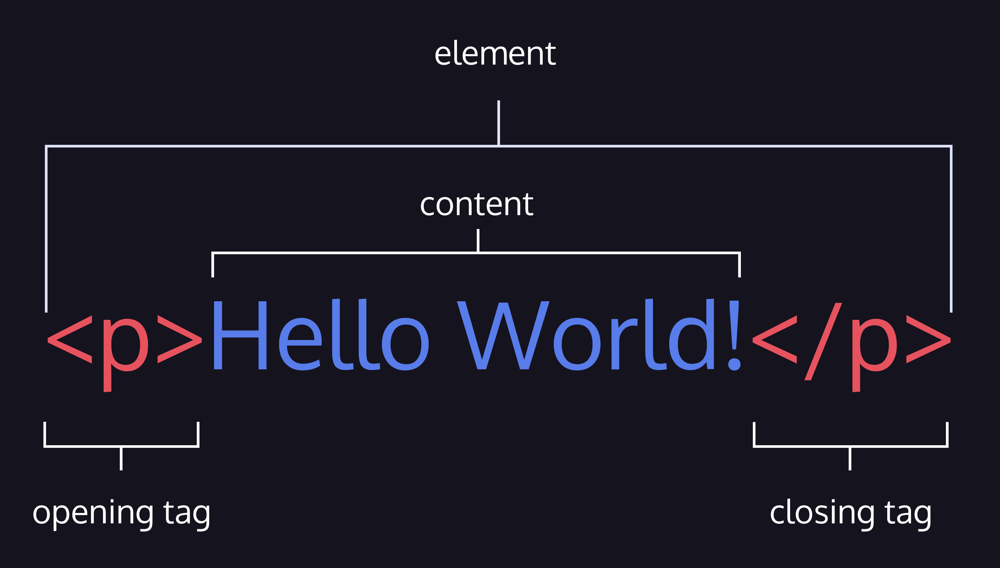
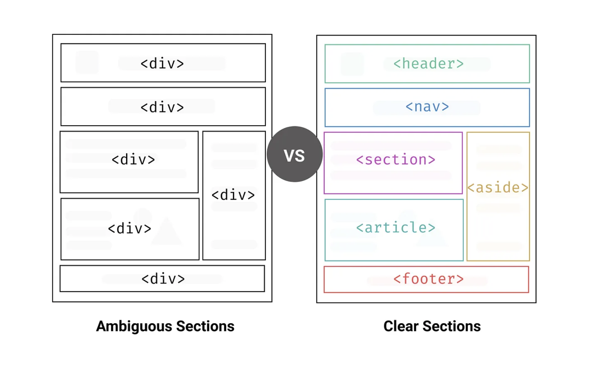

Frontend Web Development
HTML
Съдържание
- Въведение в HTML
- История и факти за HTML
- HTML синтаксис
- Основни HTML елементи
- HTML семантика
- HTML таблици
- HTML форми
- HTML5 - нововъведения
- Добри практики и съвети
- Заключение
1. Въведение в HTML
HTML (акроним за HyperText Markup Language) е основният език за структуриране и представяне на съдържание в уеб пространството. Той използва хипертекст за навигация чрез хипервръзки, които водят към други уеб страници или ресурси.
HTML е маркиращ език, който позволява на разработчиците да описват структурата и семантиката на уеб съдържанието.
С помощта на HTML авторите могат да организират различните елементи на страницата по начин, който е разбираем както за хората, така и за машините.
Браузърите интерпретират HTML кода и го визуализират, превръщайки го в уеб страници, които потребителите могат да разглеждат и използват.
HTML е маркиращ език, а не програмен език. Това означава, че HTML не извършва действия като изчисления или логически операции, както правят програмните езици. Вместо това HTML определя:
- Структурата на съдържанието - подреждането и форматирането на текстове, изображения и други елементи.
- Семантиката на съдържанието - какво означават различните елементи и
каква е тяхната роля в документа (например
<h1>за заглавия).
HTML продължава да се развива, за да отговори на нуждите на съвременния Интернет. Последната основна версия е HTML5, която е препоръчана от W3C (World Wide Web Consortium). В момента стандартът е известен като HTML Living Standard, който се поддържа от WHATWG (Web Hypertext Application Technology Working Group).
HTML документите са файлове с разширение .html или .htm. Те съдържат структурата и съдържанието на уеб страницата. Нека разгледаме следният пример за HTML документ:
Всеки HTML документ започва със специален маркер
<!DOCTYPE html>, който
информира браузъра, че документът е написан в HTML5.
Основната част на HTML документа започва с елемента
<html>, който съдържа целия код на страницата. Този елемент представлява
"коренът" на HTML документа.
Елементът <head> съдържа
метаданни, които не се
показват директно на потребителя, но са важни за браузъра и търсачките.
Елементът <body> съдържа всички видими елементи на
страницата, като заглавия, параграфи, изображения и връзки.
<!DOCTYPE html>
<html>
<head>
<title>Моята Първа Уеб Страница</title>
</head>
<body>
<h1>Здравей, свят!</h1>
<p>Това е моята първа HTML страница.</p>
</body>
</html>
2. История и факти за HTML
Историята на HTML започва с Тим Бърнърс-Лий, инженер и учен-физик в CERN (Европейски център за ядрени изследвания) в Женева, Швейцария. През 1989 г., той създава концепцията за система, която позволява на изследователите да споделят информация посредством хипертекстови документи, свързани с хипервръзки.
Тим Бърнърс-Лий

„Мрежата не свързва само машини, тя свързва хора.“ – Тим Бърнърс-Лий
„Силата на Мрежата е в нейната универсалност. Достъпът за всички, независимо от уврежданията, е съществен аспект.“ – Тим Бърнърс-Лий
През 1990 г., Тим Бърнърс-Лий разработва първия уеб сървър (CERN httpd) и уеб браузър под наименованието "WorldWideWeb" (не се бъркайте с Интернет). Този браузър е първият, който позволява на потребителите да създават и преглеждат уеб страници.
През лятото на 1991 г. проектът "WWW", покорил вече учените в Европа, пресича океана и се влива в проекта "Internet".
Възниквaт нови понятия като: URL, HTTP, TCP и др.
Първият уебсайт е направен в CERN и се появява онлайн на 6 август 1991 г.
Вижте как е изглеждал първият уебсайт:
БОНУС: Какво е URL, HTTP и TCP?
URL: Представете си, че URL е „адресът“ на уеб страницата. Като адреса на къща, той ви води до точното място в Интернет.
HTTP: HTTP е като „пощальонът“ на Интернет. Той предава съобщения между вас и сървъра.
TCP: TCP е като „инженера“, който се грижи всяка част от съобщението да пристигне в правилния ред и пълнота.
Еволюция на HTML
HTML 1.0 (1991): Първата версия на HTML, която включва основните елементи за създаване на хипертекстови документи. Тя се характеризира с прости етикети и ограничени възможности за дизайн и структура.
HTML 2.0 (1995): В тази версия бяха добавени нови функционалности, като поддръжка на таблици и форми, които направиха уеб страниците по-интерактивни.
HTML 3.2 (1997): Представи по-напреднали възможности за дизайн и въведе нови елементи като таблици за оформление и по-добра поддръжка на стилове.
HTML 4.0 (1999): Включи поддръжка за CSS (Cascading Style Sheets) за по-добро форматиране и структуриран дизайн, както и JavaScript за интерактивност на страниците.
XHTML (2000): Extensible HyperText Markup Language бе представен като по-строга, XML-базирана версия на HTML. Целта беше да се подобри съвместимостта на уеб страниците, но с времето използването му намаля поради популярността на HTML5.
Важно: С въвеждането на HTML5 и CSS3, стандарти като XHTML започнаха да отстъпват, тъй като новите технологии предложиха по-гъвкави решения.
HTML5 (2014): Най-новата версия на HTML, която донесе значителни подобрения и нови елементи като поддръжка за мултимедия (аудио и видео), 2D и 3D графика (Canvas и SVG), геолокация, както и по-добра поддръжка за мобилни устройства и различни браузъри.
БОНУС: HTML5 и залезът на Flash
Flash беше широко използвана технология за създаване на анимации, видео и игри в уеб. През 2000-те години Flash доминираше в мултимедията на уеб страниците.
С времето обаче, Flash стана проблематичен поради сигурността, неоптимизираната работа на мобилни устройства и нуждата от допълнителни плъгини.
С навлизането на HTML5, много от функциите на Flash бяха заменени с вградени възможности за аудио, видео и анимации, използвайки Canvas и SVG. HTML5 направи мултимедията по-достъпна и ефективна.
През 2020 г. Adobe официално прекрати поддръжката на Flash, с което приключи една ера в уеб разработката.
Steve Jobs срещу Flash
През 2010 г. Steve Jobs публикува писмо, в което обясни защо Apple не поддържа Flash на iPhone и iPad. Той заяви, че HTML5 е бъдещето на уеб мултимедията и че Flash е остаряла технология.
Това бе решаващ момент, който доведе до бързото отпадане на Flash в полза на HTML5.
3. HTML синтаксис
Анатомия на HTML елемент
HTML елементите са основните градивни елементи на уеб страниците. Всеки елемент има отварящ таг, съдържание и затварящ таг (с малки изключения).
Пример:
Има и HTML елементи, които не следват този модел, известни като елементи без съдържание (void elements). Те имат само отварящ таг и не съдържат затварящ таг.
Пример за такъв елемент е img (изображение):
HTML елементите могат да съдържат други елементи, което се нарича влагане (nesting). За правилно влагане трябва да затваряте всеки вложен елемент в правилния ред.
Пример:
Грешка при влагане: Неправилно вложен елемент:
Атрибути на HTML елементите
Атрибутите предоставят допълнителна информация за HTML елементите. Те се добавят към отварящия таг на елемента и са съставени от име и стойност.
Пример за използване на атрибут:
hrefе името на атрибутаhttps://www.fmi.uni-sofia.bgе стойността на атрибута
Често срещани атрибути
Някои от най-често използваните атрибути в HTML включват:
id- Уникално идентифицира елементаclass- Позволява групиране на елементи за прилагане на CSS стиловеstyle- Позволява вградени CSS стилове
Булеви атрибути
Булевите атрибути имат само две стойности – наличие и липса. Пример за булев
атрибут е disabled, който може да деактивира бутони или други елементи.
Коментари в HTML
Коментарите се използват за добавяне на бележки в кода, които не се виждат от потребителите, но са полезни за разработчиците.
Пример за едноредов и многоредов коментар:
HTML Entities се използват за представяне на символи, които имат специално значение в HTML, като
например <, >, и &. Тези символи трябва да
бъдат кодирани, за да бъдат показани правилно в браузъра.
Най-често използвани специални символи:
<- < (по-малко от)>- > (по-голямо от)&- & (амперсанд) - (незначителен интервал)©- © (авторско право)
4. Основни HTML елементи
HTML елементите могат да бъдат разделени в две категории:
- Блокови елементи - обикновено се използват за структуриране на съдържанието на уеб страницата.
- Инлайн (редови) елементи са предназначени за разграничаване на част от текста, за да му придадат конкретна функция или значение.
Блокови елементи
Някои от най-често използваните блокови елементи са:
<div>- дефинира секция на документа<h1>- дефинира заглавие<p>- дефинира параграф<ul>- дефинира неподреден списък<ol>- дефинира подреден списък<li>- дефинира елемент на списък<table>- дефинира таблица<form>- дефинира форма
Инлайн (редови) елементи
Някои от най-често използваните инлайн елементи са:
<span>- дефинира inline контейнер за текст<a>- дефинира хипервръзка<img>- дефинира изображение<button>- дефинира бутон<input>- дефинира поле за въвеждане на данни<label>- дефинира етикет за поле за въвеждане на данни<select>- дефинира падащо меню
Списък с HTML елементи
В следващите слайдове ще разгледаме някои от най-често използваните HTML елементи.
За повече информация, моля, посетете MDN Web Docs.
Заглавни елементи
Заглавните елементи се използват за създаване на структура и идентификация на различни части на
уеб
страницата. Те се маркират от <h1> до <h6>, като
<h1> има най-голям размер и важност, а <h6> - най-малък.
Параграф
Елементът за параграф <p> се използва за оформяне на обособени блокове от
текста в HTML документа. Той автоматично добавя отстояние, което го отделя от другите елементи
на страницата.
Списъци
С HTML можете да създавате неподредени списъци (<ul>), както и номерирани
списъци
(<ol>).
Division <div>
Елементът <div> се използва за групиране на други елементи. Той се използва
за
създаване на контейнери без семантично значение.
Изображение <img>
Елементът <img> се използва за вмъкване на изображения в уеб страниците:
Атрибутът src указва URL адреса (източника) на изображението, а
alt
предоставя алтернативен текст, който се показва ако изображението не може да бъде заредено.
Хипервръзка <a>
Елементът <a> се използва за създаване на хипервръзки към други уеб страници
или ресурси.
За отваряне на връзката в нов раздел на браузъра, може да използвате атрибута
target
със стойност _blank:
<button>
Използва за създаване на бутони в уеб страници. Той може да бъде използван за инициализиране на различни действия, като например изпращане на формуляри, отваряне на прозорци и др.
<span>
Елементът <span> се използва за групиране на фрагменти в документа.
<span> няма пряко влияние върху форматирането на съдържанието, но може да
бъде
използван за приложение на стилове чрез CSS:
<em> и <strong>
Таговете <em> и <strong> се използват за придаване на
акцент върху текст в HTML:
<em>- Ударение (обикновено курсив).<strong>- Важност (обикновено удебелен текст).
Примери:
<b> и <i>
Елементите <b> и <i> се използват за форматиране на текста
като съответно удебелен и наклонен текст:
<b> удебелява текста, докато <i> го прави наклонен.
Въпреки това, HTML5 препоръчва използването на <strong> вместо
<b> и <em> вместо <i> за да се подсили
семантичният аспект на текста.
<br> и <hr>
Елементите <br> и <hr> се използват за вмъкване на нов ред
и хоризонтална линия, съответно:
<br> се използва за прекъсване на текстов ред, а
<hr>
създава визуално разделение между разделите чрез добавянето на хоризонтална линия.
<sup> и <sub>
Елементите <sup> и <sub> се използват за издигане на текст
и понижаване на текст спрямо основната линия на текста:
<pre> и празните пространства в HTML
Във всяка HTML структура, множеството интервали или водещи и следващи интервали се съкращават до един единствен интервал. Нови редове също се игнорират. Но какво ако искаме да запазим оригиналното форматиране на текста, включително интервалите и новите редове?
Ето къде елементът <pre> идва на помощ. Той се използва за представяне на
предварително форматирани текстове.
Текстът, обграден от таговете <pre> запазва всички интервали и нови
редове, които са включени в него.
5. HTML семантика
Какво е HTML семантика?
HTML семантиката означава използването на правилни HTML елементи за смислено структуриране на уеб съдържанието. Това улеснява разбирането на страницата както за хора, така и за машини.
- Подобрява достъпността - Помага на екранни четци да предоставят правилна информация на хора с увреждания.
- Подобрява SEO - Търсачките могат по-добре да интерпретират съдържанието и неговото значение.
Пример за семантична HTML страница:
Основни семантични елементи
<header>- Заглавие на страница или секция.<nav>- Основни навигационни връзки.<main>- Основното съдържание на страницата.<article>- Независимо съдържание като блог пост.<section>- Групиране на съдържание по тема.<aside>- Странична информация като цитати или реклами.<footer>- Долна част на страницата.
<header>
Елементът <header> обикновено съдържа група от встъпителни или навигационни
помощни средства. Той може да съдържа логото на сайта, името на сайта, навигация и
т.н.
<nav>
Елементът <nav> представлява секция на страницата, която съдържа навигационни
връзки, които водят до други страници или до различни части на същата страница. Използва се за
основните навигационни блокове на сайта, като менюта, индекси и др.
<main>
Елементът <main> определя главното или уникалното съдържание на документа,
което се отличава от повтарящи се блокове на страницата, като навигационната лента или основното
меню. Всяка страница трябва да има само един <main> елемент.
<section>
Елементът <section> представлява семантичен блок в HTML, който служи за
групиране на съдържание около обща тема или функция.
<article>
Елементът <article> представлява независима, самостоятелна част от документ,
която обикновено се използва за групиране на съдържание, което може да се разпространява или се
използва независимо от останалата част от страницата.
<aside>
Елементът <aside> представлява част от страницата, чието съдържание е отделно
от съдържанието около него и което, ако се премахне, не би нарушило потока на документа.
Обикновено се използва за връзки с други части на сайта, реклами, цитати и други елементи.
<footer>
Елементът <footer> определя долна част или долен колонтитул на документ или
раздел.
Той обикновено съдържа информация относно автора на документа, декларация за авторски права,
връзки към документи с правила и условия, контактна информация и др.
Заключение
Използването на семантични HTML елементи прави страниците по-лесни за разбиране и достъпни за всички потребители, включително за хора с увреждания и търсачки.
- По-добра структура и поддръжка на кода.
- Подобрена SEO оптимизация.
- Подобрена достъпност за потребителите.
6. HTML таблици
Какво представляват HTML таблиците?
HTML таблиците се използват за представяне на данни в табличен формат - редове и колони. Те са полезни за структурирането на информация като календари, отчетни данни и ценоразписи. Важно е таблиците да се използват за представяне на данни, а не за оформяне на съдържанието на уеб страницата.
Основни елементи на HTML таблица
Таблиците в HTML се състоят от редове и колони. Всеки ред се дефинира с елемента
<tr>, (table row) а всяка колона или клетка в реда се дефинира с елемента
<td> (table data).
Пример за таблица с два реда и две колони:
<th> - Заглавни клетки
Елементът <th> се използва за дефиниране на заглавна клетка в таблицата.
Обикновено заглавните клетки са разположени в първия ред и се използват за обозначаване на
имената на колоните.
<caption> - Заглавие на таблица
Елементът <caption> дефинира заглавие на таблицата и трябва да бъде поставен
непосредствено след отварящия <table> таг.
<thead>, <tbody>,<tfoot>
Елементите <thead>, <tbody> и <tfoot> се
използват за групиране на съответно заглавните клетки, основното съдържание и долната част на
HTML таблици. Те помагат за по-добра организация и стилизация на данните в таблиците.
Пример за таблица с <thead>, <tbody> и
<tfoot>:
<table> атрибути
border- Определя дебелината на границата на таблицата.cellpadding- Определя отстоянието между съдържанието на клетките и границите им.cellspacing- Определя отстоянието между клетките на таблицата.
Пример за таблица с атрибути:
Атрибути на <td>
colspan- Определя колко колони заема клетката.rowspan- Определя колко реда заема клетката.
Пример за таблица с атрибути colspan и rowspan:
<colgroup> и <col>
Елементите <colgroup> и <col> се използват за задаване на
стилове за една или повече колони в таблицата, без да се налага форматиране на всеки отделен
елемент <td> или <th>.
Пример за използване на <colgroup> и <col>:
Вложени таблици
В HTML е възможно да се влагат таблици в клетките на други таблици. Това може да бъде полезно при създаването на сложни формати. Въпреки това, използването на вложени таблици може да увеличи сложността на кода и да направи поддръжката по-трудна, особено при адаптивни дизайни.
Пример за вложени таблици:
7. HTML Форми
Какво представляват HTML формите?
Формите са основни елементи в HTML, които се използват за събиране на информация от потребителите. Те съдържат елементи като текстови полета, бутони за избор, падащи менюта и други, които позволяват взаимодействие между потребителя и уеб страницата.
Основни атрибути на <form>
action- Определя URL адреса, към който ще бъдат изпратени данните от формата.method- Определя HTTP метода за изпращане на информацията. Най-често използваните методи саGETиPOST.
GETизпраща данните в URL адреса, докатоPOSTизпраща данните скрито.
<input>
Елементът <input> създава различни видове полета за въвеждане на данни, в
зависимост от стойността на атрибута type.
Атрибути на <input>
type- Определя типа на полето (текст, парола, бутон и т.н.).name- Името на полето, което се използва при изпращане на данните към сървъра.value- Стойността на полето, която ще бъде изпратена при изпращане на формата.required- Указва, че полето е задължително за попълване.
Примери за различни типове <input> полета
- text: Стандартно поле за въвеждане на текст.
- password: Поле за въвеждане на парола, което скрива въведените символи.
- radio: Радио бутон, който позволява избор на една опция от няколко.
- checkbox: Отметка, която позволява избор на множество опции.
- email: Поле за въвеждане на имейл адрес, валидирано според формата на имейлите.
- date: Поле за избор на дата чрез календар.
- number: Поле за числови стойности.
<select> (Падащи менюта)
Елементът <select> създава падащи менюта. Той съдържа елементи
<option>, които определят възможните избори в менюто.
<textarea>
Елементът <textarea> създава текстово поле с множество редове за въвеждане на
по-дълъг текст.
<button>
Елементът <button> създава бутон, който може да изпълнява различни действия
във формата, като например изпращане на формуляра.
Валидация на HTML форми
Валидацията на формите е процесът на проверка на въведените от потребителя данни, за да се гарантира, че те отговарят на зададените изисквания. Валидацията може да се извършва от страна на клиента (с помощта на HTML5 атрибути) или от страна на сървъра (с помощта на скриптове).
Пример за валидация с HTML атрибут:
Тук required указва, че полето е задължително, а pattern определя
регулярния израз за валидиране на въвежданите данни.
8. HTML5 - нововъведения
HTML5 е значителен напредък в уеб технологиите, който въвежда нови елементи, атрибути и API, които подобряват функционалността и опростяват създаването на модерни уебсайтове.
- Doctype: Новият
<!DOCTYPE html>е по-прост и декларира страницата като HTML5. - Семантични елементи: Нови елементи като <header>, <footer>, <nav>, <section>, <article> улесняват семантичната структура на уеб страницата, подобрявайки достъпността и SEO.
- Графични елементи: HTML5 добавя <canvas> за динамично рисуване и <svg> за векторна графика, което подобрява управлението на изображения и графики.
- Форми: Подобрена валидация и нови типове полета като
emailиdateопростяват създаването на форми. - Мултимедия: Вградена поддръжка за аудио и видео чрез <audio> и <video> елементи без необходимост от външни плъгини.
- Съхранение: localStorage и sessionStorage позволяват съхраняване на данни на клиентската страна, без нужда от бисквитки.
- Уеб API: HTML5 представя API като Geolocation, Web Workers, и WebSocket за по-добра интерактивност и производителност на уеб приложенията.
Мултимедия в HTML5
HTML5 предоставя вградена поддръжка за аудио и видео без необходимост от външни плъгини като Flash.
- <audio> - Използва се за вграждане на аудио файлове. Поддържа атрибути като
controls,autoplayиloop. - <video> - Използва се за вграждане на видео файлове. Поддържа същите
атрибути като
audio, катоcontrolsиautoplay.
Пример за вграждане на аудио и видео:
Графика и векторна графика
HTML5 въвежда елементи като <canvas> за растерна графика и <svg> за векторна графика, което позволява създаването на интерактивни графични приложения и диаграми директно в браузъра.
Уеб API възможности
HTML5 представя мощни нови уеб API като Geolocation за достъп до местоположението на потребителя, Web Workers за многопоточност в JavaScript и WebSocket за реалновременна комуникация между клиента и сървъра.
// Използване на Geolocation API
navigator.geolocation.getCurrentPosition(function(position) {
const pos = {
lat: position.coords.latitude,
lng: position.coords.longitude
};
console.log(pos);
});
// Използване на Web Worker
const myWorker = new Worker("worker.js");
myWorker.postMessage("Hello from main thread");
9. Добри практики и съвети
Използвайте семантични елементи
Семантичните HTML елементи като <header>, <footer>,
<nav>, <section>, и <article> помагат
да се структурира правилно съдържанието на уеб страницата, като същевременно подобряват нейната
достъпност и SEO.
Това също подобрява съвместимостта със съвременните екранни четци и улеснява хората с увреждания.
Валиден HTML код
Винаги пишете валиден HTML код, който следва спецификациите на W3C. Това не само подобрява съвместимостта с различни браузъри, но също така прави страницата по-достъпна и структурирана.
Използвайте инструменти като W3C HTML Validator, за да проверите страниците си за грешки.
Оптимизация на изображения
Оптимизирайте изображенията си, за да подобрите бързината на зареждане на страницата. Компресирайте изображенията и използвайте модерни формати като WebP, които предлагат по-малък размер и по-добро качество.
Може да използвате инструменти като TinyPNG или ImageOptim за оптимизация преди качване.
Спазване на стандартите за съвместимост
Уверете се, че HTML кодът е съвместим с различни браузъри и устройства. Различните браузъри поддържат различни HTML функционалности, затова е важно да проверявате съвместимостта на функционалностите, които използвате.
Инструмент като Can I use може да ви помогне да видите кои браузъри поддържат различни HTML елементи и атрибути.
Бъдете последователни
Използването на последователни стилове за именуване на класове, атрибути и други елементи прави кода по-четим и лесен за поддръжка. Придържайте се към установени конвенции за именуване и структура на кода.
Това включва последователност при използването на кавички за атрибути, вложеност на елементи и поддържане на правилна структура на HTML документа.
Обмислете достъпността
Създаването на достъпни уебсайтове е от съществено значение за осигуряване на равен достъп до съдържанието за всички потребители, включително за хора с увреждания.
- Използвайте
altатрибут за изображения, за да предоставите описание на съдържанието за потребители с екранни четци. - Използвайте правилни семантични HTML елементи, за да улесните навигацията в страницата с помощта на клавиатура.
- Тествайте достъпността с инструменти като WAVE за откриване на потенциални проблеми с достъпността.
10. Заключение
Разгледахме основните концепции на HTML, включително синтаксис, семантика, нововъведения в HTML5 и добри практики за писане на ефективен и валиден код. HTML е основополагащ за изграждането на уебсайтове, и овладяването му е първата стъпка към създаването на качествено съдържание в Интернет.
Надявам се да сте придобили полезни знания и уверено да използвате HTML за вашите бъдещи проекти.
Благодаря ви за вниманието!
Въпроси? 🤔
Контакти
- Имейл: konstantin.gogov@icloud.com
- LinkedIn: Константин Гогов